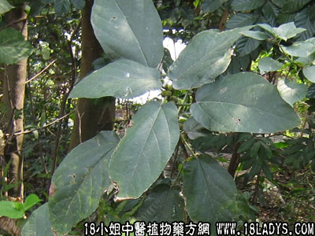

牛奶树叶(中药材植物名:粗叶榕)(植物科目:桑科)

别名：牛奶仔。
植物名：粗叶榕。
生长环境：本品为灌木或小乔木。生长于山野的什木林中，或丘陵坡地，而以村落附近的旷地为多。叶形变异极大，尤其在幼树与萌生的枝上，有全绿的，有分裂的，即大小尺度亦极差异，俨然若干种不同的植物，但仔细观察之，则并无任何不同之处。
分布：广东的中部、北部和南部。海南等地常有，此外亚洲热带地区亦有。
入药部分：叶、根、寄生俱入药。
采集期：春、夏、秋。
自采地点：山野、山脚、水沟旁。
性味：性凉、味平淡。
功能、用量和用法：热滞：干用叶1至2两，清水煎服。
验方：（治猪牛眼热、发热及食滞方）牛奶树叶1斤、榕树叶1斤、三把苓半斤，用水适量，煎食。
（方解）本方牛奶树叶清热消滞，榕树叶清热疏肝消肿，为眼科要药；三把苓降火清热，如猪牛眼热有红肿痛者，服之甚验，并治猪牛发热及食滞有效。
（方歌）猪牛食滞兼眼热，牛奶树叶榕树叶，如兼发热出癍痧，再加茯苓功更捷。
附录：（根）治跌打积瘀肿痛，用1至2两煲猪瘦肉服。
（牛奶树寄生）治小肠气痛、胃痛、苦伤吐血，用1两至2两，煲猪瘦肉食。
参考资料：《重庆祖国医学采风集》内记载生用牛奶子树烧油外搽治痔疮。
《广东省中医验方交流汇编》治胃气剧痛方：牛奶树根适量、石膏、豆腐同煮食。